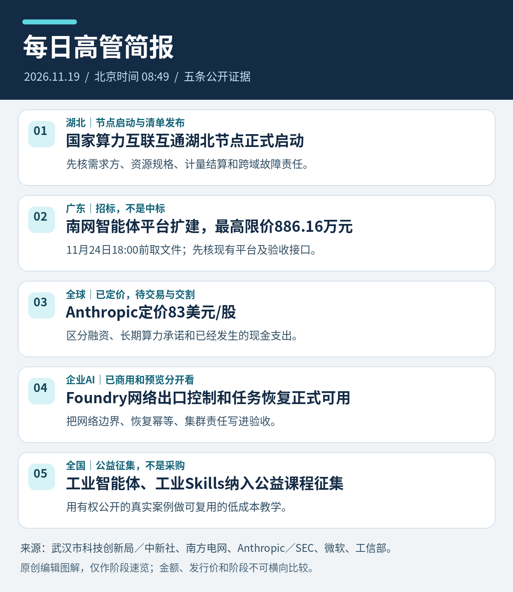

本期范围与证据口径
北京时间 2026 年 11 月 19 日，检索截止 08:49；优先窗口为 11月18日 08:49 至 11月19日 08:49。五条新增均在24小时内，较早材料仅作背景。已回看近7天简报和当日独立AI日报，本期不重复其四条选题。

01｜湖北算力节点正式启动：供需清单是入口，不是订单
11月18日，国家算力互联互通区域（湖北）节点在武汉正式启动。武汉市科技创新局同日转载的湖北日报报道显示，截至10月，该平台接入省内外30余家算力提供商。中新社当日报道，同期供需对接会发布算力需求场景清单、算力资源供给承接能力清单。此次新增是节点启动，比此前的获批建设与平台门户上线更进一步。
影响与建议：先核对清单中真正有预算、有交付窗口的需求，再用一笔跨域业务验证资源可售、计量出账、结算和故障责任。把接入数量与实际用量分开追踪。
证据边界：节点由政府网站刊载报道及现场报道交叉印证；两份清单的发布见现场报道，未取得全量附件和逐项预算，不能计入订单。 [1] [2]
02｜南方总调886.16万元扩建智能体平台：先看存量系统能否接入
11月18日11:08，南方电网发布南方总调调度人工智能创新平台功能加装招标。广州实施，单包最高限价886.16万元，总价包干。公告要求在既有平台增加智能体构建、样本与模型服务和运营能力，涉及工作流、自主规划、测试仿真、发布审核与运行监控。11月24日18:00停止取文件，12月9日09:00截标，不接受联合体。
影响与建议：这是平台扩建，不是昨日的专项智能体研发或数据采购。立项筛选先读技术规范书：确认现有组件接口、历史样本能否迁移、权限与审计如何贯通、能否按现有环境完成验收，再算改造工时。
证据边界：已读取南网官方原公告，未取得完整技术规范书；限价不是成交价，也不代表允许替换现有技术栈。 [3]
03｜Anthropic公布IPO定价：大额融资承接多年算力承诺
美国当地11月18日，Anthropic公告IPO定价为83美元/股，发行总数9.8亿股。按公告计算，发行总额813.4亿美元，其中公司发行新股对应毛额约793.77亿美元，未扣费用、不含超额配售。公司预计11月19日以ANT开始交易、11月20日交割，后者仍取决于惯常条件。
影响与建议：更值得关注的是算力采购方式。11月17日递交的修订招股书显示，公司从仅靠定期云合同转向云采购与芯片直租、专用机房并行，并把机房和加速器承诺分开。经营上可参考分阶段锁定资源，但扩容仍应由签约需求、用量承诺和回款支撑。
证据边界：最终发行条件以定价公告为准；修订招股书只作采购模式背景。定价不是已经挂牌、交割或收到净融资，不是A股或国内政企预算信号。 [4] [5]
04｜微软Foundry补齐托管智能体的网络与恢复能力
11月18日（美国当地），微软公布Foundry托管智能体更新：网络出口控制与长任务故障恢复正式可用；私有CA信任和集中网络策略处于公开预览，自带Azure Kubernetes Service（AKS）集群部署计划12月初进入公开预览。微软称出口规则由沙箱外执行，恢复会重新运行处理程序。
影响与建议：与上一期的Agent 365费用治理不同，这次更新针对运行边界。验收至少测两件事：模拟未授权的出口连接是否被阻断，作业中断重启后是否会重复写业务单据。应用必须保存进度并对业务动作去重。
证据边界：依据微软产品文档，未实测地区和配额；自带AKS不等于脱离Azure或可离线私有化，也不代表全流程原生编排已交付。 [6]
05｜工信部征集中小企业AI公益课程，明确纳入工业智能体
11月18日17:06，工信部中小企业局发布工企业函〔2026〕363号，面向包括AI应用服务商在内的单位征集中小企业AI赋能公益培训课程，范围包括工业智能体、工业Skills及垂直行业低成本实操。申报于12月31日截止。课程不得夹带广告，申报方须具备相应权利并同意公益使用。
影响与建议：适合用真实、经授权的案例做可复用培训：交代适用任务、数据条件、实施成本、失败边界和验收方法，避免做成产品宣传。用学习和应用反馈衡量价值，不列入商机收入。
证据边界：官方正文可由检索索引读取，直连访问未成功；这是公益课程征集，不是招标、补贴或产品背书。 [7]
存量事项
武汉首批算力券覆盖截至11月30日的实际使用，12月1–8日提交材料。继续按客户把合同、发票、付款和实际用量对齐；本期未把既有申领通知计作新增。 [8]
今日判断
今天最值得推进两件事：湖北先找能跑完跨域计量结算的一笔真实业务；广东先对照现有平台接口决定是否筛标。南网的采购要求和Foundry的工程更新共同指向一件事：生产智能体不仅要会做任务，还要能审计、控出口、在中断后安全恢复。海外大模型企业的融资能支撑算力投入，但国内资源扩张仍应按可确认的客户需求和现金回收安排。